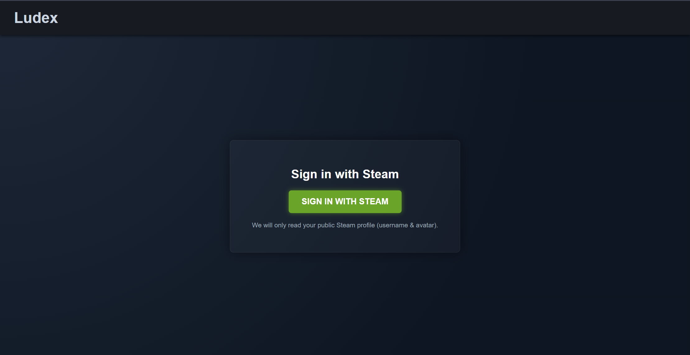
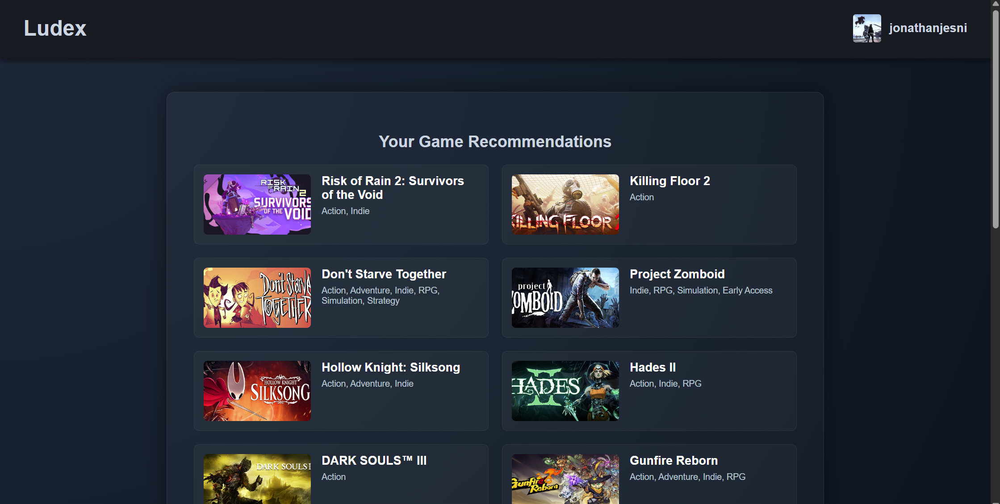

Featured Project
Ludex — Hybrid Recommendation System
A hybrid recommendation engine fusing TF-IDF content modeling with implicit-feedback collaborative filtering (ALS). Serves personalized game recommendations via anchor-based profiling, score-normalized fusion, and MMR-based re-ranking — handling cold-start users out of the box.
Built with: Python, Scikit-learn, Implicit ALS, Steam API